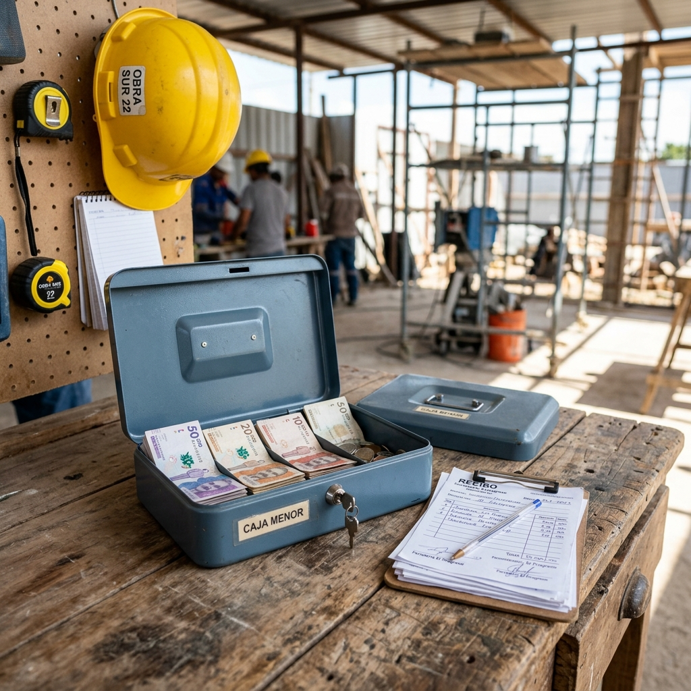

Elimine el desperdicio financiero y audite su proyecto en tiempo real mediante asistentes inteligentes y dashboards ejecutivos. Cero curva de aprendizaje y Protección Total de Datos (NDA).
Supervise materiales, maquinaria en alquiler y bitácoras de avance sin salir de su celular.
Diagnóstico Financiero: ¿Cuánto Dinero está Perdiendo su Obra?
McKinsey & Company documenta que la productividad global de la construcción crece apenas 0,4% anual desde el año 2000, y que los sobrecostos promedian el 79% frente al presupuesto inicial en grandes proyectos. La literatura de Lean Construction ubica el desperdicio en más del 50% del tiempo en sitio, concentrado en coordinar mano de obra y mover materiales.
Sobre esa base, nuestra estimación de trabajo es que entre el 5% y el 15% del presupuesto de una obra se va en sobrecostos invisibles, materiales no trazados y horas muertas. Es un rango operativo, no una cifra publicada: lo usamos para dimensionar la conversación con usted, y lo primero que hace SICO es medir cuánto es en su obra en concreto.
Ajuste el presupuesto y la duración de su proyecto para calcular el dinero rescatado por SICO.
Cómo se calcula: partimos del rango de fuga documentado para el sector (5% a 15% del presupuesto) y aplicamos una tasa de recuperación del 20% al 35% sobre esa fuga. No asumimos que el software recupera la totalidad de la pérdida: SICO aporta trazabilidad y evidencia; las decisiones de compra, negociación y programación siguen siendo suyas. Es una estimación para dimensionar la conversación, no una promesa de rendimiento.
El fin de los formatos en papel.
Su residente, maestro o almacenista interactúa con un bot inteligente que lo guía paso a paso. Pruebe los módulos principales a continuación:
Adiós a los recibos perdidos. El residente ingresa el monto, el concepto y toma una foto de la factura al instante. SICO inyecta el gasto directamente en su balance financiero.

Controle cada bulto de cemento y varilla de acero que entra o sale de la obra. El bot actualiza automáticamente las alertas de stock en su dashboard.
Controle días de permanencia, tarifas diarias y horas de uso de excavadoras, compactadores y mezcladoras para evitar cobros indebidos por stand-by.
Este módulo es el corazón de la obra. Permite reportar clima, avances fotográficos, imprevistos y registrar datos clave de la jornada sin fricción.
🏗️ SICO Obras v2.4
Bienvenido al panel de control de obra. Selecciona el módulo con el que deseas trabajar hoy:
Simula un reporte en campo:
SICO no es un software estático en caja. Al estar construido sobre una poderosa Máquina de Estados Serverless, construimos cualquier módulo especial que su constructora requiera bajo un pago único de configuración. Luego, su mensualidad se mantiene exactamente igual.
Política de Módulos Personalizados: Se realiza un único cobro por la construcción del flujo según su complejidad. El módulo pasa a ser parte de su entorno sin elevar su tarifa mensual recurrente.
Charlas de 5 min, EPPs y reportes de seguridad.
Pruebas de cilindros, asentamientos y ensayos.
Asistencia de cuadrillas, dominicales y horas extra.
Visualizador de planos PDF en alta resolución.
Auditoría en Tiempo Real.
Todos nuestros planes incluyen la consolidación de datos en tiempo real en la nube. Haga clic en cada pestaña para explorar las vistas del dashboard:
$6.000.000 COP
$4.230.000 COP
100% Verificado
28 Soportes en Google Drive
| Fecha / Hora | Concepto Registrado en Bot | Monto | Soporte Drive |
|---|---|---|---|
| 23/07/2026 - 10:15 AM | Compra de 3 discos de pulidora 7" | $65.000 | Factura_042.jpg |
Bultos de 50kg
Varillas 6m Figuradas
42.5 Hrs Operativas
1.5 Hrs Espera Justificada
-$680.000 COP
Disciplina: Estructura · PDF 14 MB
Disciplina: Hidrosanitario · PDF 8 MB
Condensa la información del día enviada por el residente (clima, novedades, fotos) y autogenera un documento estructurado listo para la interventoría.
PROYECTO: Edificio Torres del Valle
CLIMA REGISTRADO: Mañana soleada (32°C) / Lluvia moderada a las 4:00 PM deteniendo fundida.
AVANCE DE ACTIVIDADES:
Protección Absoluta de su Información
Garantizamos la privacidad operativa y la portabilidad total de sus datos.
Firmamos un acuerdo de confidencialidad legal. Los costos, nóminas, proveedores y presupuestos de su obra jamás se compartirán ni se utilizarán para terceros.
Sin secuestro de datos. Si cancela su suscripción, se le entrega la totalidad de su base de datos, bitácoras en Word y archivo fotográfico intacto.
SICO opera sobre la infraestructura robusta de Google, aprovechando un esquema Serverless ágil que reduce costos y prepara sus datos para Análisis con Inteligencia Artificial.
SICO no fue diseñado por teóricos del software. Detrás de esta plataforma hay un profesional con años de experiencia directa en el campo de la obra. Conocemos de primera mano los dolores reales del proyecto: las fugas de dinero, el descontrol operativo y los reportes tardíos. Por eso combinamos la vivencia en terreno con automatización de procesos, creando una herramienta que soluciona el caos diario y protege la rentabilidad del constructor.
Todo incluido.
Cotizado para su obra.
No hay versiones recortadas. El valor de SICO está en los datos, y limitar módulos limita datos. Su obra recibe el sistema completo desde el primer día; lo único que cambia es la mensualidad, según el presupuesto que esté administrando.
No cobramos lo mismo por una remodelación que por un edificio, porque no le entregamos lo mismo. Estos son órdenes de magnitud para que se haga una idea:
Lo que ajusta la cotización
Su equipo ya sabe usar el sistema y la configuración está hecha. Ese ahorro se lo trasladamos.
Si prefiere dejarlo cubierto desde el inicio dentro de sus costos indirectos, en vez de pagarlo mes a mes.
Trabajamos con obras desde $100 millones. Respuesta el mismo día.
Lo mismo para todos. No hay funciones bloqueadas.
En una obra promedio, SICO cuesta menos de lo que se pierde en un solo día de equipo alquilado parado.
En la reunión le mostramos ese cálculo con los números de su obra, no con los de otra.
Todo lo que necesita saber antes de implementar SICO en su proyecto.
Está diseñado para que lo opere cualquier persona encargada en el frente de obra (maestro de obra, almacenista, residente o auxiliar designado). Incluimos una capacitación práctica de máximo 1 a 2 días y 1 semana completa de acompañamiento en vivo garantizado para asegurar la correcta adopción de su equipo.
Usted es el dueño absoluto del 100% de los datos. La información se estructura en su propio entorno corporativo en la nube y respaldamos el compromiso con un Acuerdo de Confidencialidad (NDA) legal.
La configuración técnica toma menos de 48 horas: permisos, estructura de su obra y accesos quedan listos, y su personal puede empezar a reportar el mismo día. La adopción completa en campo toma una semana, y la acompañamos día a día hasta que el equipo reporte solo.
Los mensajes y fotos se guardan en la cola del teléfono del operario y se sincronizan automáticamente tan pronto el dispositivo capte señal o WiFi.